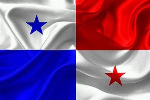

Bandera
La bandera de Panamá tiene cuatro cuadrantes: dos blancos, uno azul y uno rojo, con una estrella azul que simboliza la pureza y otra roja la fuerza.
La bandera de Panamá tiene cuatro cuadrantes: dos blancos, uno azul y uno rojo, con una estrella azul que simboliza la pureza y otra roja la fuerza.
El escudo de Panamá representa el istmo y contiene símbolos de paz y prosperidad, como el arco iris y el sol naciente.
Panamá se independizó de Colombia en 1903 y es conocido por su canal, que conecta el océano Atlántico con el Pacífico.
Panamá tiene una extensión territorial de aproximadamente 75,417 km².
El Canal de Panamá es una maravilla de la ingeniería que permite la conexión entre los océanos Atlántico y Pacífico.
El Casco Viejo es el centro histórico de la Ciudad de Panamá, conocido por su arquitectura colonial.
Un conjunto de islas en el Caribe habitadas por la comunidad indígena Guna, famosas por sus playas y cultura.